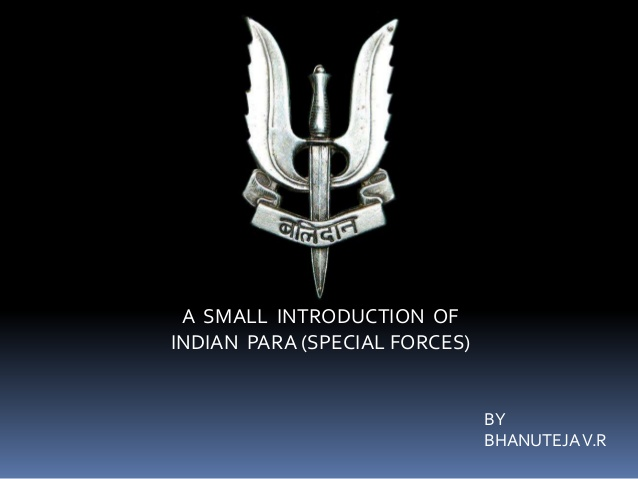
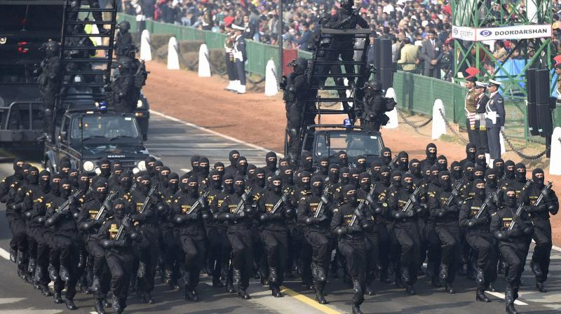
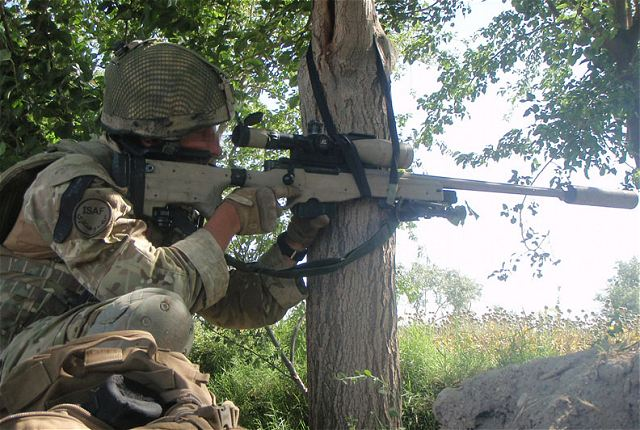

Para (Special Forces), commonly known as Para SF, is the special force unit of the Indian Army. It is attached to the Parachute Regiment. The unit's heritage stems from World War II, with the creation of the 50th Parachute Brigade in October 1941. 9 Para SF, raised in 1966 as 9th Parachute Commando Battalion, is the oldest among the eight Para SF units of the Indian Army. The unit is tasked with missions such as special operations, direct action, hostage rescue, counter-terrorism, unconventional warfare, special reconnaissance, foreign internal defense, counter-proliferation, counter-insurgency, seek and destroy and personnel recovery. {Example of mission}:On 29 September 2016, India said the strike targeted areas close to the Line of Control (LoC), where it believes militants congregate for their final briefings before sneaking across it into India. An Indian security source said the operation began with Indian forces firing artillery across the frontier to provide cover for three to four teams of 70&80 commandos from 4 and 9 Para (Special Forces) to cross the LoC at several points shortly after midnight IST on 29 September (18:30 hours UTC, 28 Sept.). Teams from 4 Para SF crossed the LoC in the Nowgam sector of Kupwara district, with teams from 9 Para SF simultaneously crossing the LoC in Poonch district.By 2 a.m. IST, according to army sources, the special forces teams had travelled 1 km (0.62 mi) - 3 km (1.9 mi) on foot, and had begun destroying the terrorist bases with hand-held grenade and 84 mm rocket launchers. The teams then swiftly returned to the Indian side of the LoC, suffering only one casualty, a soldier wounded after tripping a land mine.(My dream is to join this force and serve my country.)
The National Security Guard (NSG) is an Indian special forces unit under the Ministry of Home Affairs (MHA). It was raised in 1984, following Operation Blue Star and the assassination of Indira Gandhi, "for combating terrorist activities with a view to protect states against internal disturbances".NSG is under the authority of Ministry of Home Affairs. However it is not categorised under the uniform nomenclature of Central Armed Police Forces.It has a special forces mandate, and its core operational capability is provided by the Special Action Group (SAG) which is drawn from the Indian Army. The Special Rangers Group (SRG), the police component of NSG, which also handles VIP security, is composed of personnel on deputation from other Central Armed Police Forces and State Police Forces.The NSG personnel are often referred to in the media as Black Cats because of the black outfit and black cat insignia worn on their uniform. {Example of mission}:30 April 1986: About 300 NSG commandos and 700 Border Security Force[BSF] troops stormed the Golden Temple in Operation Black Thunder I. The Temple was cleared and handed over to Punjab Police on 1 May 1986. 300 Sikh militants were captured, and there were no deaths or injuries for either side.
COBRA (Commando Battalion for Rescue Action) is a specialised unit of the Central Reserve Police Force (CRPF) of India proficient in guerrilla tactics and jungle warfare. Originally established to counter the Naxalite problem, COBRA is deployed to address any insurgent group engaging in asymmetrical warfare.Currently numbering ten battalions,COBRA is ranked among one of India's most experienced and successful law enforcement units.{Example of mission}:In a special ops launched in Saranda forest area in District W/Singhbhum, Jharkhand from 24 September 2010 Cobra teams were able to penetrate deep in forest and kill one Maoist, apprehend 4 Maoists cadres, bust 12 Maoist camps and recover of arms/explosives.
 Click here to see ammunations